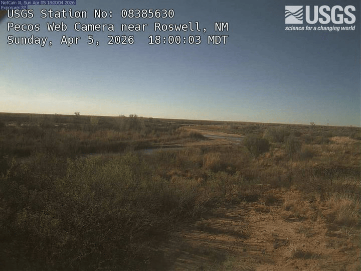
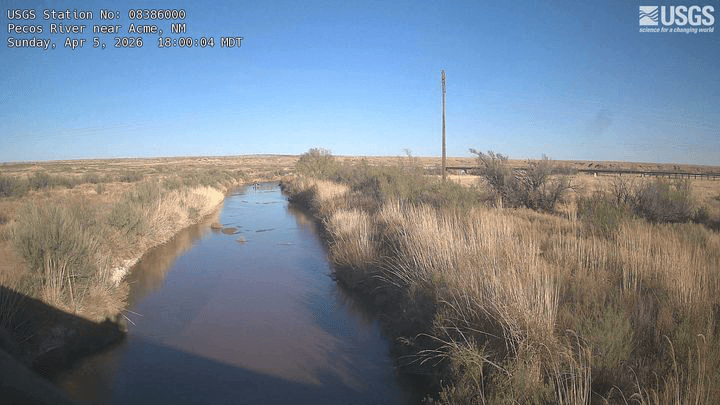

The Pecos River drains the Sacramento Mountains before flowing southeast through the Roswell Basin toward the Texas state line. Two USGS stream-gage cameras sit roughly 45 km apart along this reach:
| Site | NWIS ID | Camera ID |
|---|---|---|
| Pecos Web Camera near Roswell | 08385630 | NM_Pecos_Web_Camera_near_Roswell |
| Pecos River near Acme | 08386000 | NM_Pecos_River_near_Acme |
Because a flood pulse typically takes several hours to travel between the two sites, comparing the image records lets you watch a flow event propagate downstream. This vignette shows how to discover both cameras, list and download images, and produce an animated GIF and an MP4 from the two sites.
Camera discovery with gage metadata
find_gage_cameras() wraps find_cameras() and joins in NWIS site attributes—drainage area, state, county, hydrologic unit code—via dataRetrieval::read_waterdata_monitoring_location(). The result has every column returned by find_cameras() plus the enriched NWIS columns where available.
roswell <- find_gage_cameras("08385630")
roswell
acme <- find_gage_cameras("08386000")
acmeColumns added by the NWIS join include:
| Column | Description |
|---|---|
monitoring_location_name |
Full official site name |
drain_area_va |
Drainage area in square miles |
hydrologic_unit_code |
12-digit HUC |
state_name |
State of the monitoring location |
Compare drainage area between the two sites—Acme is downstream so its contributing watershed is larger:
Check image availability before downloading. newestImageDT (UTC) tells you when each camera last reported:
roswell$newestImageDT
acme$newestImageDTListing images from both cameras
Use the same time window for both sites so the image sets are directly comparable. A two-element vector passed to time sets a closed interval; a single value means “on or after”:
window <- c("2025-06-10", "2025-06-13")
roswell_imgs <- list_images(
"NM_Pecos_Web_Camera_near_Roswell",
time = window,
raw_item = TRUE,
recent = FALSE # chronological order
)
acme_imgs <- list_images(
"NM_Pecos_River_near_Acme",
time = window,
raw_item = TRUE,
recent = FALSE
)Bind the two results to compare counts and timestamps side by side:
raw_item = TRUE returns camId, filename, timestamp, and fs (file size in kilobytes). The timestamps are UTC strings in NIMS format (YYYY-MM-DDTHH-MM-SSZ).
Downloading images from both sites
Create a separate destination directory for each site so the files don’t mix:
roswell_dir <- file.path(tempdir(), "roswell")
acme_dir <- file.path(tempdir(), "acme")
dir.create(roswell_dir, showWarnings = FALSE)
dir.create(acme_dir, showWarnings = FALSE)Download the Roswell images first:
roswell_paths <- download_images(
cam_id = "NM_Pecos_Web_Camera_near_Roswell",
dest_dir = roswell_dir,
size = "small",
time = window
)Then the Acme images:
acme_paths <- download_images(
cam_id = "NM_Pecos_River_near_Acme",
dest_dir = acme_dir,
size = "small",
time = window
)Both calls skip files that already exist on disk (overwrite = FALSE by default), so re-running after an interrupted download is safe. Switch to size = "overlay" if you want the full-resolution images with the gage-height annotation overlaid.
GIF of the Roswell camera
Build an animated GIF from the images already on disk by pointing dir at the download directory. This avoids a second round of network requests:
make_gif(
dir = roswell_dir,
fps = 3,
output = "roswell_event.gif"
)For a time range spanning multiple days, one_per_day = TRUE reduces the animation to one frame per calendar day—the image captured closest to local noon in the camera’s time zone. This keeps the GIF from becoming unwieldy over a long monitoring period:
Adjust fps to control playback speed: 1–2 fps gives enough time to read individual frames during a flood event; 4+ fps is better for a seasonal overview where you want to convey change over weeks.
make_gif() requires the gifski package (and jpeg/png for JPEG-format source images, which NIMS typically serves).
Here is a 30-day example from the Roswell camera (one frame per day):

Video of the Acme camera
make_video() produces an MP4 from the same inputs. It accepts identical arguments to make_gif() and requires the av package:
make_video(
dir = acme_dir,
fps = 3,
output = "acme_event.mp4"
)You can also stream directly from NIMS without a prior download:
make_video(
cam_id = "NM_Pecos_River_near_Acme",
time = window,
fps = 3,
output = "acme_event.mp4"
)An MP4 at the same resolution and frame count is substantially smaller than a GIF. For a multi-day event with hundreds of frames, video is generally the better choice; GIF is more convenient for embedding in tools that don’t support video.
Here is the same 30-day window from the Acme camera for comparison:

Tips
-
Check
newestImageDTfirst. If the timestamp is hours or days old the camera may be offline. Spot-check before committing to a large download. -
Use
"thumb"for exploration. Thumbnails are around 200 px tall and much smaller than"small"images. Download a thumb set first to verify coverage before switching to"small"or"overlay". -
Time zones. All NIMS timestamps are UTC. The
tzcolumn in the camera metadata records the camera’s local IANA time zone if you need to convert for display orone_per_dayinterpretation. -
Large downloads.
"small"images are roughly 150–300 KB each. A 30-day window at one image per 15 minutes is around 2,900 files (~600 MB). Plan accordingly and useoverwrite = FALSEto resume safely. -
Rate limits. Unauthenticated requests share a pool across all users. Store an API key with
set_usgs_api_key()(seevignette("getting-started")) to use your personal allocation.
Full function reference: https://connorb.github.io/flowcam/reference/